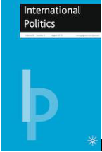

收录于合集 #理论研究 96个

简 介
** 【作者】** 埃德温·范·德·哈（Edwin van de Haa），布朗大学政治学理论教授，研究方向为国际政治理论中的自由主义传统。著有《自由度:自由主义政治哲学与意识形态》(2015)、《古典自由主义与国际关系理论:休谟、史密斯、米塞斯与哈耶克》(2009)和《深爱却不为人知:自由主义政治哲学》(2011)。
** **【 编译 】****赵 雷
** **【 校对 】****许文婷
** **【 审核 】****施榕
** **【 来源 】****van de Haar, Edwin. “Fostering liberty in international relations theory: the case of Ayn Rand.” International Politics 56.1 (2019): 1-16.
** 【期刊】** International Politics是一本具有开拓性的学术期刊，致力于探讨跨国问题和全球问题。期刊研究问题包括俄罗斯与西方关系、中国和平崛起的机会、正义战争的概念、古巴后卡斯特罗时代的前景、美国衰落的可能性等等。2018年影响因子0.693。

促进国际关系理论中的自由:以安·兰德为例
Fostering Liberty in International Relations Theory: The Case of Ayn Rand
Brown University（布朗大学）
Edwin van de Haa（ 埃德温·范·德·哈）
文章导读
**1
**
简 介
自国际关系学作为一门学科诞生以来，自由主义就被广泛地认为是国际关系中最重要的理论之一。在很大程度上，这可以看作是过去几个世纪以来政治学理论中自由主义传统的突出体现。然而， 政治学理论中的自由主义是广泛的，具有很多变体，“没有一个单一的，明确的东西叫做自由主义” （Freeden, M. 2015. Liberalism. A Very Short Introduction. Oxford: Oxford University Press.）。例如，根据对“个人与国家之间合理的关系是什么?”这一问题的不同解答，可以划分不同的自由主义思想：社会自由主义认为，国家应在个人生活中发挥重要作用(通过广泛的规章制度和福利安排，这需要高税收)；古典自由主义认为，国家的作用应该是有限的(提供最低限度的公共产品和服务)；自由放任主义认为，国家的作用应该很小，或者根本没有作用。
自由民主和平理论、自由国际主义、新自由主义、内嵌自由主义、制度自由主义、自由现实主义等重要理论都是国际关系理论的主流。尽管这些理论侧重于国际关系的不同方面，但它们在不同程度上具有一些共同的特征，这些特点将被用来作为分析的尺度:（1）世界和平是可以实现的，因为我们相信人类有足够的理性克服战争和冲突。（2）国家在国际关系中被视为一个有问题的角色。它发挥作用的余地需要被削减。（3）以和平为导向的外交政策可以通过国内制度安排，尤其是民主来促进(民主和平理论)。（4）在国际领域，政府间组织和非政府组织、体制和国际法具有重要作用，其目的是克服或消除强权政治的影响(自由制度主义)。（5）国际贸易能够促进和平，这往往与所谓的利益集团的安抚和公众舆论对外交政策制定的影响相结合。（6）对人道主义干预的支持是自由主义的另一个主要特征。
作者认为， 在国际关系理论中，自由主义思想内部的复杂对话似乎在大多数国际关系学者的视野中消失了。 国际关系学者在塑造追求单一因果关系的理论时忽视了自由主义思想内部的差异性，忽视了不同思想家提出观点时所处的历史大背景，这导致了对国际事务中自由主义观点的描述不完整，或完全错误。“国际关系理论家错误地将亚当•斯密描述为一位认为贸易将促进和平的思想家，或许可以作为一个重要的例子。”（Van de Haar, E.R. 2013. Adam Smith on Empire and International Relations. In The Oxford Handbook of Adam Smith, ed. C. Berry, M.P. Paganelli and C. Smith. Oxford: Oxford University Press.）
作者在本文中将对安·兰德的国际政治思想进行全面分析，并将之与当前国际关系自由主义理论的主要共同特征进行比较，从而展现在国际政治中几种促进个人自由方式的“自由主义内部对话”，并最终有助于更好地描述、理解和使用国际关系中的自由主义。
**2
**
安·兰德的政治思想
**
安 ·兰德设计了一个她称之为 **客观主义（ Objectivism）**的理论。其中，个人的生命是价值的标准。兰德认为，关心自己的生命是人类的首要道德目标。理性是人类生存的主要工具，其需要用意志而不是强迫来实现。因此，没有人可以对他人使用武力。个人权利对于保护个人免受他人胁迫至关重要。保护这些权利需要一个政府，以确保人类可以自由地追求自己的目的。
关于个人权利， 兰德认为， 最基本的权利是生命权。派生权利是自由、财产和追求幸福的权利。 生命权是一种自由，可以采取理性人的本性所要求的一切行动，以支持、促进、成就和享受自己的生命。自由权是指根据自己的判断行事的自由，包括传统的自由(言论、结社等)。财产权是对包括知识产权在内的物质价值的获得、保有、使用和处分的权利。对幸福的追求是个人生活的核心目标，可以被视为维持自己身体和心理的权利。
关于政府作用， 兰德认为， 政府的任务限于保护人的权利和防止人身暴力 。合理的政府机构有保护人们免受犯罪的警察、保护人民免受外国侵略的军队、根据客观法律解决人与人之间纠纷的法院。个人需要把保护自己权利的任务交给政府，因为政府垄断了报复性武力的使用。对兰德来说，这是实现个人权利有序和法律界定的强制执行的唯一途径。社会是由个人组成的，他们可以自愿地集体行动，但没有任何“共同利益”超过政府保护每个人权利的基本道德义务。如果存在这样一种义务，个人权利很容易被所谓的公共利益诉求所侵犯，且很有可能受到少数行使政治权力的人的影响。 鉴于兰德主张严格限制政府的观点，自由放任主义是在社会上进行经济和政治合作的合乎逻辑且道德健全的方式。
**3
**
安·兰德对国家和主权的看法
对于国家， 但像亚里士多德一样，安·兰德将所人们生活的社区或国家从功能上定义为 “ 许多人生活在相同的地理位置并在相同的政治制度下”。与专注于国家和民族问题的国关理论相反，对兰德来说，个人是她关注的中心。她认为尊重部落、种族和地区语言是不文明的、非理性的，是对个人自由的限制。但这并不是要否认一个国家成员之间的牵绊感，这种感觉表现在两个层次上。首先， 一个国家有共同的特征或“文化”，这是个人的智力成就和所有公民接受的主导思想的总和。 第二， 民族具有“生命感”，通过占统治地位的大多数人的生活方式来表达，这是形成民族特色的基础。 生命感是一种良性的民族主义(或爱国主义)，是维系一个国家团结的粘合剂，而不是破坏性的民族主义。兰德指出，美国人的生活观念传统上倾向于自由和个人成就，而反对欧洲常见的那种国家影响。
对于主权， 安·兰德在主权和干预问题上的立场取决于所涉国家的道德品质。 主权是一项必须争取的权利，但也可能丧失。 如果一个国家充分尊重个人权利的原则，它的主权权利就得到道义上的保障，应该得到其他国家的尊重，反之则会丧失。 自决和主权只存在于自由国家和寻求建立自由的社会。她把世界分为三类国家:第一，遵守客观主义原则的国家，拥有充分的主权;第二，走向自由的国家，通常被称为“混合经济体（mixed economies）”，或介于自由与独裁之间的中间地带;第三，不值得存在的国家，比如独裁和专制。不幸的是，世界缺乏完全自由的国家。不过，“混合经济体”并没有无限制的干预权利。它们只能在另一个国家严重违反客观主义原则时进行干预。在其他情况下，主权仍应得到尊重，以避免混乱和随后对个人自由的侵犯。兰德还认为，只有在军事干预成功地建立了一个以个人权利为基础的自由社会时，军事干预才具有道义上的正当性。
安·兰德的国家与主权思想符合正义战争的传统，这一传统在国际关系理论中经常被自由主义者提及，其中包括主权并非绝对的，其他国家可以在某些情况下进行干预，尽管没有国家有义务这样做。 与自由主义国际关系不同的是，兰德始终把国家视为世界政治的主要参与者。
**4
**
安·兰德的国际秩序理论
对于和平与冲突问题， 兰德不对和平抱太大的乐观态度，因为人性使消除国际冲突成为不可能。 只有在遵循客观主义原则生活的理性人中，理性利益才会和谐，和平才有可能产生。 然而，在当今世界也存在着大量的非理性行为、不良道德和其他引发争议的因素。这就导致国内需要一个政府，而国际秩序则依赖于对邪恶势力的强大防御和反抗能力，而不是主流自由主义政策的安抚作用。
客观主义的一项重要原则是， **任何人(包括各国 )都无权在最开始时使用武力。使用武力的权利只存在于报复中，而且只存在于对挑起暴力的人的报复中。**主动使用武力与被动使用武力是“谋杀和自卫之间的区别”。兰德写道，当一个外国开始使用武力时，另一个国家有道义上的责任以武力作出回应。因此， 兰德认为战争的主要原因不是物质问题、国内利益、体制安排或国际体系结构。相反，战争植根于人性。 所以传播客观主义思想来避免战争是至关重要的。同时，她也承认权力在世界政治中的永久影响。当一个国家宣布放弃报复性使用武力时，它就无助地听任发动武力的外国侵略者摆布。因此她批判和平主义实现的目标与其所宣称的目标相反，即鼓励和奖励邪恶。在这一点上，她同意大多数其他自由主义者的观点，包括哈耶克和罗尔斯。
当代自由主义和平运动的重点是废除核武器和裁减或废除武装部队。在兰德看来，核军备竞赛是必要的。原子弹本身并不是邪恶的，而是人类思想的产物，并被人类思想所利用。她反对征兵制，赞同志愿入伍，因为只有志愿军在捍卫自由国家的过程中才有道义上的正当性，她认为这也会限制战争。而应征入伍的军队会为了自卫以外的其他目的而参与冲突。
对于集体行动与国际合作， 兰德最核心的道德关切是，集体行动有可能在国内和国际上压制并最终侵犯个人权利。 她谴责自由国际主义关于一个国家的主权和利益应该为国际社会牺牲的主张。相反， 国家的利益取决于个人的权利和利益。 因此， 国际合作的唯一适当基础是国家利益 ，这是一个传统的现实主义立场。 在国际层面上，“行星共同体”（a planetary community）以及其他世界性的想法必须被拒绝。但是兰德并不反对一切形式的国际合作或在跨国层面的主权集中，这取决于他们保护个人权利的程度。
兰德对国际法本身缺乏信心，但兰德确实把国际条约视为坚定的义务。此外，兰德还看到了自由资本主义的和平效应，因为它是建立在自由个人对自身利益的承认和不使用武力的基础上的。资本主义造就了一个商人的社会，因此，客观主义外交政策的本质必须是自由贸易。
综上所述，兰德充分认识到权力政治在国际领域的作用，她认为权力政治起源于人性。然而，她相信，可以添加一个道德因素，使世界事务与她保护个人自由的总体目标保持一致。 **国际正义意味着促进由自由个人组成的主权国家的发展，这些人准备并愿意保卫自己不受一切破坏或威胁 客观主义理想的力量的侵害。**自由贸易是国际交流的主要手段。和平主义、国际合作、国际政府组织和其他自由主义的老生常谈在道德上是错误的，或者是幼稚的。
**5
**
**安·兰德对美国外交政策的评价 **
兰德的目标很明确:她想要一个强大的美国，一个自由的道德堡垒，它反抗对资本主义和个人主义构成威胁的每一个人和每一个国家。对兰德来说，促进自由是硬实力的问题。
古巴导弹危机是一个例子。在前苏联宣布撤军后，肯尼迪总统称赞他的外交是成功的，兰德则认为，肯尼迪没有实现先前的诺言。他之前断言美国不会容忍任何国家的蓄意欺骗和进攻性威胁，这种承诺毫无意义
从一开始，兰德就反对越南战争，因为美国没有任何自私的理由去打这场战争，因为战争不涉及国家利益，也没有任何好处。她认为，在越南的失败不是军事上的失败，美国军事软弱的印象是错误的。越南战争是国际利他主义和右翼非道德政策侵蚀道德的结果。在南越的军事崩溃之前，美国也经历了哲学上的崩溃。
**6
**
结 论
安·兰德的著作是对公认的自由主义国际关系理论的一种替代。最重要的是，作者的分析为自由主义内部关于世界事务的争端的存在提供了更多证据。一方面，兰德采用了坚定的道德出发点，并在现实世界中严格应用这些原则。另一方面，她对世界的现状抱有现实的期望，包括权力的重要性、国家以及改变当代世界现状的困难。她的理想主义表现在她对客观主义世界的国际和谐抱有多少乐观的期望，但这些几乎不妨碍她对当前事件的分析。 她与其他自由主义者一样，最终相信世界和平的可能性，以及自由贸易在实现这一目标方面的积极作用，同时她也认可出于有限的目的进行军事干预。然而，与其他的自由主义者相反，兰德驳斥了大多数形式的国际政府组织和自由体制主义的其他表现形式。
安·兰德的国际政治观点 并非完全正确 。她的想法往往 缺乏足够的细节 ，而且 以美国为中心 ，因此往往 局限于一个具有强大军事实力与影响力的超级大国的视角。
尽管如此，分析表明， 国际关系理论家们确实需要接受不同的自由主义观点。 特别重要的是，应该承认， 个人自由可以通过国家在国内和国际关系中发挥不同作用的若干方式得到捍卫和促进。
_ ** _ 本文由国政学人平台编译推荐**
往期阅读
【重磅速递】约瑟夫·奈：美国霸权的兴衰：从威尔逊到特朗普 | 国政学人
【重磅推荐】巴里·布赞：英国学派视角下的中国崛起 | 国政学人
【重磅速递】米尔斯海默：注定失败：自由主义国际秩序的兴衰 | 国政学人
【IPE重磅】罗伯特·基欧汉：国际政治经济学的新与旧 ｜国政学人
【百年国关】历史在国际社会中的应用：从巴黎和会到现在 | 国政学人
【国际组织】IO杂志：联合国维和行动的武力运用问题研究 | 国政学人
【国际秩序】为什么自由主义国际秩序理念将美国外交政策引入歧途？| 国政学人
【关系理论】“关系”：世界政治关系理论的中国话语 | 国政学人
【英国学派】张勇进：中国与全球国际社会中的自由主义等级制：实力与对规范变迁的协商 | 国政学人
【地区秩序】论经济实力的可转化性：中国经济崛起与东亚安全秩序 | 国政学人
【中俄关系】不得已的伙伴：系统-单元动态与中俄关系 | 国政学人
【IPE研究】美国对外贸易政策的“1934年体制”是如何形成的？| 国政学人
【现实主义】斯蒂芬·沃尔特：傲慢的终结与美国克制的新时代 | 国政学人
【理论批判】系统、层次与结构理论：沃尔兹的理论并非系统理论 | 国政学人
【外交政策】单极体系下的不和平状态与美国外交政策 | 国政学人
【欧洲研究】资本主义多样性与合规：加入欧盟后中东欧的经济改革 | 国政学人
【理论研究】吴建树：权力、道德、均势、联盟与摩根索——汉斯·摩根索的经典现实主义思想再解读
【友谊国关】将友谊重新引入国际关系：从中国到西方的关系本体论
【定量研究】政党实力和经济增长（Party Strength and Economic Growth）| 国政学人
【台湾学者】向骏：美国从“霸权稳定”到“霸凌不稳定” | 国政学人
【理论研究】巴里·布赞等：重思日本：主流国际关系理论的偏见 | 国政学人
【南亚研究】南亚对冲：中印竞争中经济和安全利益的平衡 | 国政学人
【外交政策】美国霸权的自我毁灭：华盛顿浪费了单极时代 | 国政学人
【定量研究】谁在欧洲议会中领导委员会？ ——基于2014年欧洲议会选举的研究 | 国政学人
【定量研究】暴露于难民危机之中会让当地人更有敌意吗？| 国政学人
【恐怖主义】恐怖主义组织扩展数据（EDTG）的介绍——从1970年到2016年 | 国政学人
【定量研究】赞助、信任和国家能力：庇护主义的历史轨迹 | 国政学人
【伊朗研究】比较伊朗伊斯兰革命前后威权政体的本质和领导能力 | 国政学人
【东亚研究】东亚的重叠式区域主义：决定因素和潜在影响 | 国政学人
【战争研究】不确定的战争：克劳塞维茨在全球时代仍适用吗？｜国政学人
【历史类比】克服西方历史想象的贫困：理解中国南海冲突的其他历史类比案例 | 国政学人
【区域重磅】阿米塔·阿查亚：重塑东南亚研究：自我怀疑、渴望和对比较的承诺 | 国政学人
【安全研究】打击军事力量的新时代：科技变化与核威慑的未来 ｜国政学人
【理论研究】砝码国家何以自抬身价？——两极格局下同盟政治中的“科林斯难题”研究
【中东研究】国际误识：以色列公共外交中的幽默政治和国家认同 | 国政学人
【IPE研究】公平贸易运动对内嵌自由主义的挑战 | 国政学人
【社群冲突】非洲农村社群冲突分析：剩男与一夫多妻的邻族 | 国政学人
【安全研究】核机会主义：一种在国际政治中国家如何使用核武器的理论 ｜国政学人
【方法研究】我们应该在多大程度上信任乘积交互模型？改进实证研究的简单工具 | 国政学人
【国际格局】查尔斯·格拉泽：为何单极格局并非如此重要？| 国政学人
【巴以问题】为合法性而“战”：以加沙船队为例的行事竞争 ｜国政学人
【中国外交】IS杂志：声誉、决心与中国在南海争端中强制手段的运用丨国政学人
【安全研究】IS杂志：相互依赖的武器化：论全球经济网络对国家强制权力的塑造作用 | 国政学人
【冲突研究】反政府组织资金与儿童士兵：探索自然资源与强行征募的关系 | 国政学人
【全球治理】罗伯特·基欧汉：气候变化机制复合体 | 国政学人
【欧洲研究】欧债危机到申根区危机：一体化理论、政治化和身份政治 | 国政学人